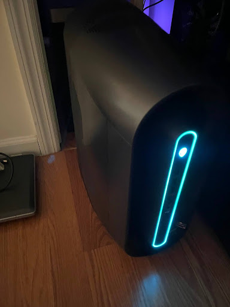
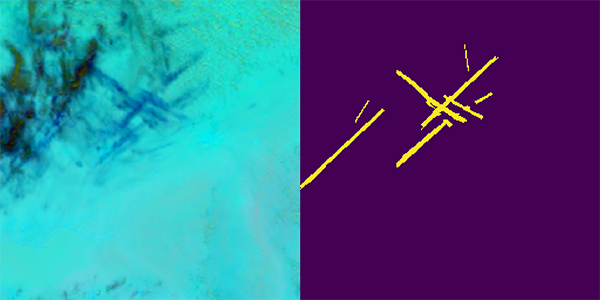
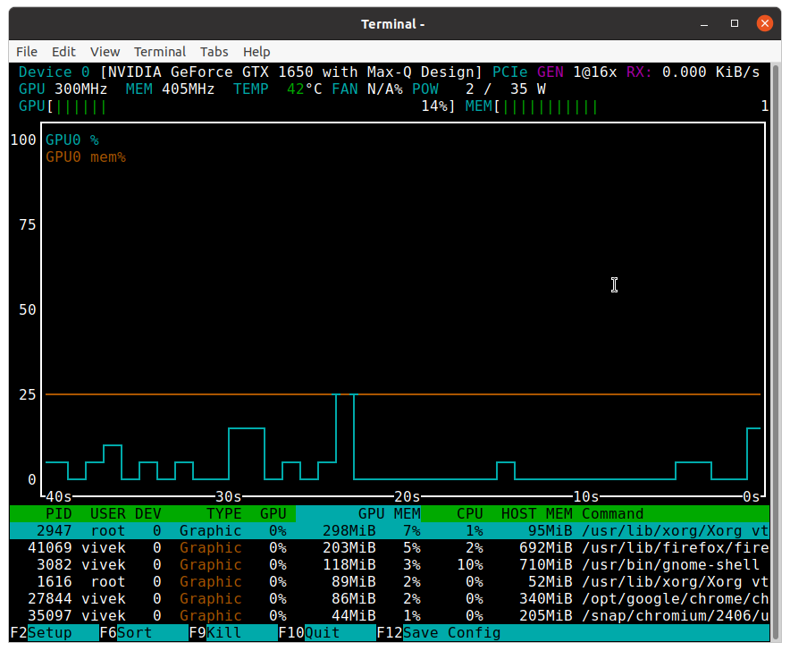

1 |
Set up GPU (Geforce RTX 3090), and the Ubuntu 22.04 operating system. |
 |
2 |
Set up the Jupyter notebook containing the SegFormer B0 model. |
 |
3 |
Download packages in the folder containing the jupyter notebook file, download packages which allow the model to work and communicate with the GPU, including TensorFlow and HuggingFace Transformers. |
 |
4 |
Convert the contrails dataset to grayscale, load in the contrails dataset from HuggingFace, and place it onto a specific storage device due to its large size. |
 |
5 |
Train the model! |
 |